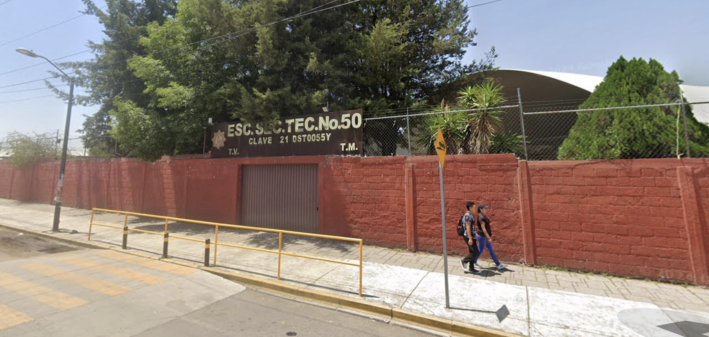

Mi Trayectoria Académica
Jardin de Niños
Inicié mi educación en el Jardin de Niños de Bosques de San Sebastian , donde aprendí las bases del aprendizaje y la socialización.


Primaria
Realicé mis estudios de primaria en la Gral Juan N. Mendez, en el turno Vespertino, donde adquirí conocimientos básicos en matemáticas, ciencias, español, geografia, e historia de México.

Secundaria
Estudié la secundaria en la Técnica Secundaria No. 50, donde adquirí conocimientos en informática y electrónica. Fue en esta etapa donde nació mi interés por las tecnologías, lo que más adelante definiría mi camino académico.
 Ver UbicaciónBachillerato
Forme educación media superior en el Bachillerato Enrique Martínez Márquez, donde adquirí conocimientos fundamentales para mi formación académica
Ver UbicaciónEducación Superior
Actualmente, estudio la carrera de Ingeniería en Tecnologías de la Información y la Comunicación en el Instituto Tecnológico de Puebla.
Ver Ubicación